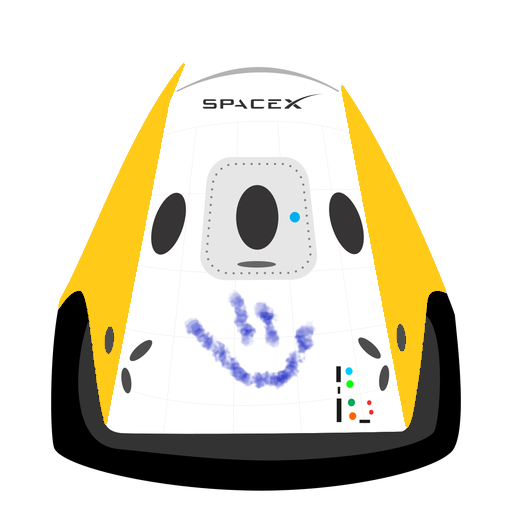

Hyperblog
Tu blog de confianza
Aquí inicia la historia de un gran proyecto
Y este es el párrafo de inicio donde vamos a exclipar las cosas increíbles que se pueden hacer con ramas

Los blogs son la mejor forma de compartir información y tus ideas. Mucho más que ir a conferencias o salir en Youtube. Excepto si eres un rockstar. Pero estadísticamente no lo eres... por ahora.
Suscribete y dale like